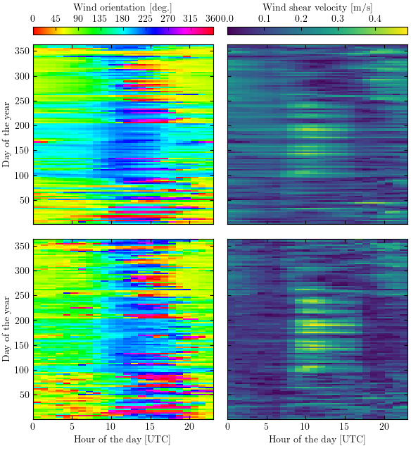
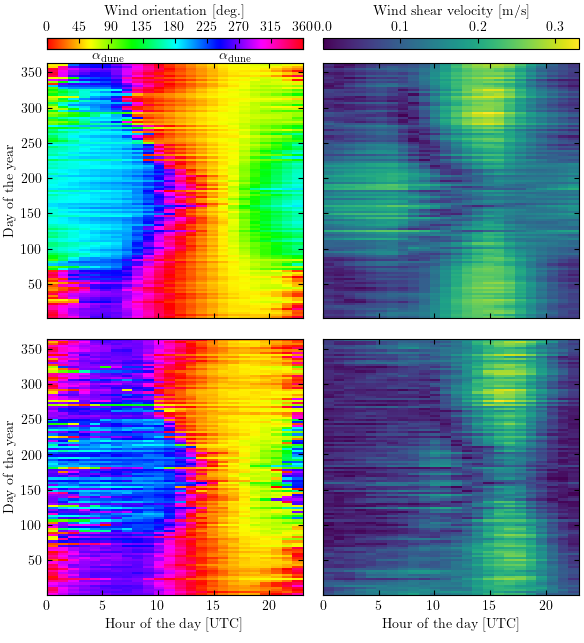
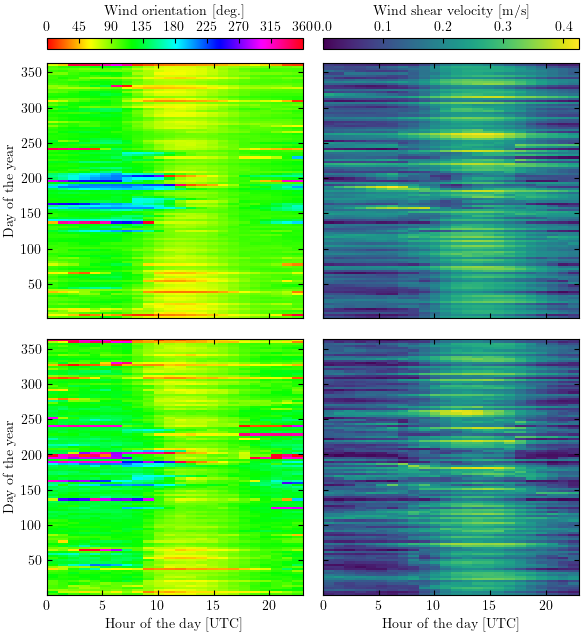
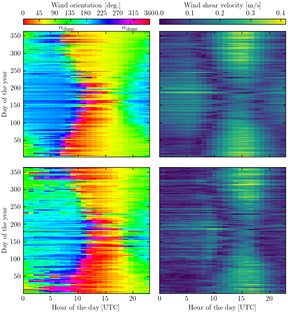

Note
Click here to download the full example code
Comparison between the Era5Land and the in situ datasets¶
import numpy as np
import matplotlib.pyplot as plt
import matplotlib.colors as Mplcolors
import matplotlib.gridspec as gridspec
import os
import sys
sys.path.append('../../')
import python_codes.theme as theme
from python_codes.plot_functions import plot_scatter_surrounded, plot_wind_rose
from python_codes.meteo_analysis import compute_circadian_annual_cycle
from python_codes.general import smallestSignedAngleBetween, find_mode_distribution
from scipy.stats import binned_statistic_2d
theme.load_style()
# paths
path_savefig = '../../static/output_data/figures/'
path_ouputdata = '../../static/output_data/data/'
# Loading wind data
Data = np.load(os.path.join(path_ouputdata, 'Data_final.npy'), allow_pickle=True).item()
Stations = sorted(Data.keys())
# Loading pattern characteristics
Data_pattern = {}
for station in ['Deep_Sea_Station', 'South_Namib_Station']:
Data_pattern[station] = np.load(os.path.join(path_ouputdata, 'Analysis_DEM_' + station + '.npy'), allow_pickle=True).item()
Wind roses¶
h = 115
bins = [0.03, 0.15, 0.2, 0.25, 0.3, 0.35, 0.4]
fig_width = theme.fig_width
fig_height = 0.75*fig_width
fig = plt.figure(figsize=(fig_width, fig_height))
gs = gridspec.GridSpec(3, 2, height_ratios=[0.25, 1, 1], width_ratios=[1, 1])
gs.update(left=0.025, right=0.97, bottom=0.03, top=0.97, wspace=0.15, hspace=0.25)
for i, station in enumerate(Stations):
gs_sub = gs[i + 2].subgridspec(2, 2, height_ratios=[0.01, 1])
#
ax = plt.subplot(gs_sub[0, :])
plt.axis('off')
ax.text(0.5, 0.5, Stations[i][:-8].replace('_', ' '), ha='center', va='center', transform=ax.transAxes)
rect = plt.Rectangle([-0.05, -h], 1.1, h + 10, edgecolor='k', fill=False, transform=ax.transAxes, zorder=3, figure=fig)
fig.patches.extend([rect])
#
ax = plt.subplot(gs_sub[1, 0])
ax_rose_era = plot_wind_rose(Data[station]['Orientation_era'], Data[station]['U_star_era'], bins, ax, fig, 'Era5Land')
ax = plt.subplot(gs_sub[1, 1])
ax_rose_station = plot_wind_rose(Data[station]['Orientation_station'], Data[station]['U_star_station'], bins, ax, fig, 'in situ')
#
if station in Data_pattern.keys():
rmax = ax_rose_station.get_rmax()
plt.plot([Data_pattern[station]['orientation']*np.pi/180, Data_pattern[station]['orientation']*np.pi/180 + np.pi], [rmax, rmax], color='tab:grey', ls='--', linewidth=2)
ax_rose_station.set_rlim(0, rmax)
# colorbar
gs_sub = gs[0, :].subgridspec(3, 3, height_ratios=[0.5, 0.4, 0], width_ratios=[0.2, 1, 0.2])
norm = Mplcolors.BoundaryNorm(boundaries=bins + [bins[-1] + 0.05], ncolors=256)
sm = plt.cm.ScalarMappable(cmap='viridis', norm=norm)
cb = fig.colorbar(sm, cax=plt.subplot(gs_sub[1, 1]), orientation='horizontal')
cb.set_label(r'Wind shear velocity, $u_{*}~[\textrm{m}~\textrm{s}^{-1}]$')
labels = [item.get_text() for item in cb.ax.get_xticklabels()]
labels[-1] = r'$\infty$'
cb.set_ticklabels(labels)
cb.ax.xaxis.set_ticks_position('top')
cb.ax.xaxis.set_label_position('top')
plt.savefig(os.path.join(path_savefig, 'wind_roses.pdf'))
plt.show()
Circadian/annual wind cycle¶
for station in Stations:
# Averaging into bins
binned_era = compute_circadian_annual_cycle(Data[station]['Orientation_era'], Data[station]['U_star_era'], Data[station]['time'])
binned_station = compute_circadian_annual_cycle(Data[station]['Orientation_station'], Data[station]['U_star_station'], Data[station]['time'])
U_max = max([binned_era[1].max(), binned_station[1].max()])
#
# Making figure
fig_width = theme.fig_width
fig_height = 1.1*fig_width
fig = plt.figure(figsize=(fig_width, fig_height))
gs = gridspec.GridSpec(2, 2, height_ratios=(0.02, 1))
gs.update(left=0.08, right=0.99, bottom=0.075, top=0.94, hspace=0.05, wspace=0.08)
gs_imshow = gs[1:, :].subgridspec(2, 2, hspace=0.08, wspace=0.08)
for i, dat in enumerate([binned_era, binned_station]):
plt.subplot(gs_imshow[i, 0])
a = plt.imshow(dat[0], extent=[dat[3].min(), dat[3].max(), dat[2].min(), dat[2].max()], vmin=0, vmax=360, origin='lower', aspect='auto', interpolation='None', cmap='hsv')
if i == 1:
plt.xlabel('Hour of the day [UTC]')
else:
plt.gca().set_xticklabels([])
plt.ylabel('Day of the year')
plt.subplot(gs_imshow[i, 1])
b = plt.imshow(dat[1], extent=[dat[3].min(), dat[3].max(), dat[2].min(), dat[2].max()], vmin=0, vmax=U_max, origin='lower', aspect='auto', interpolation='None')
if i == 1:
plt.xlabel('Hour of the day [UTC]')
else:
plt.gca().set_xticklabels([])
plt.gca().set_yticklabels([])
#
# colorbars
cb_orientation = plt.colorbar(a, cax=plt.subplot(gs[0, 0]), orientation='horizontal')
cb_orientation.set_label('Wind orientation [deg.]')
cb_orientation.set_ticks([0, 45, 90, 135, 180, 225, 270, 315, 360])
# = adding dune orientation
if station in Data_pattern.keys():
ax2 = cb_orientation.ax.twiny()
ax2.set_xlim([0, 360])
ax2.set_xticks([Data_pattern[station]['orientation'], Data_pattern[station]['orientation'] + 180])
ax2.set_xticklabels([r'$\alpha_{\rm dune}$', r'$\alpha_{\rm dune}$'])
ax2.xaxis.tick_bottom()
ax2.xaxis.set_tick_params(pad=1)
cb_orientation.ax.xaxis.set_ticks_position('top')
cb_orientation.ax.xaxis.set_label_position('top')
cb_velocity = plt.colorbar(b, cax=plt.subplot(gs[0, 1]), orientation='horizontal')
cb_velocity.ax.xaxis.set_ticks_position('top')
cb_velocity.ax.xaxis.set_label_position('top')
cb_velocity.set_label('Wind shear velocity [m/s]')
#
plt.savefig(os.path.join(path_savefig, 'circadian_annual_cycle_' + station + '.pdf'))
plt.show()
- 
- 
- 
- 
Scatter plots – Orientation¶
Stations = ['Deep_Sea_Station', 'South_Namib_Station']
Stations_ref = ['Adamax_Station', 'Huab_Station']
Uth = [0.1, 0.25]
# Low velocities
x_low = np.concatenate([Data[station]['Orientation_era'][(Data[station]['U_star_era'] < Uth[0])] - Data_pattern[station]['orientation'] for station in Stations])
y_low = np.concatenate([Data[station]['Orientation_station'][(Data[station]['U_star_era'] < Uth[0])] - Data_pattern[station]['orientation'] for station in Stations])
#
# Intermediate velocities
x_inter = np.concatenate([Data[station]['Orientation_era'][(Data[station]['U_star_era'] >= Uth[0]) & (Data[station]['U_star_era'] <= Uth[1])] - Data_pattern[station]['orientation'] for station in Stations])
y_inter = np.concatenate([Data[station]['Orientation_station'][(Data[station]['U_star_era'] >= Uth[0]) & (Data[station]['U_star_era'] <= Uth[1])] - Data_pattern[station]['orientation'] for station in Stations])
#
# High velocities
x_high = np.concatenate([Data[station]['Orientation_era'][(Data[station]['U_star_station'] > 0) & (Data[station]['U_star_era'] > Uth[1])] - Data_pattern[station]['orientation'] for station in Stations])
y_high = np.concatenate([Data[station]['Orientation_station'][(Data[station]['U_star_station'] > 0) & (Data[station]['U_star_era'] > Uth[1])] - Data_pattern[station]['orientation'] for station in Stations])
#
# Reference stations
x_ref = np.concatenate([Data[station]['Orientation_era'] for station in Stations_ref])
y_ref = np.concatenate([Data[station]['Orientation_station'] for station in Stations_ref])
# ############# figure
#
# Plot parameters
X = [x_low, x_inter, x_high]
Y = [y_low, y_inter, y_high]
ALPHA = [0.2, 0.1, 0.1]
label = ['(a)', '(b)', '(c)', '(d)']
pad_lines = 1.5 # shifting lines of <pad_lines> degress when they are on the border of the plot
fig_width = theme.fig_width
fig_height = 1.3*fig_width
fig = plt.figure(figsize=(fig_width, fig_height))
#
gs = gridspec.GridSpec(5, 1, height_ratios=[1, 0.22, 1, 1, 1])
gs.update(left=0.08, right=0.98, bottom=0.053, top=0.99, hspace=0.07)
for i, (x, y) in enumerate(zip(X, Y)):
ax = plt.subplot(gs[i + 2])
plot_scatter_surrounded(x, y, 'C' + str(i + 1), ALPHA[i])
#
# Reference lines
if i in [1, 2]: # identity line
plt.plot([0, 360], [0, 360], color='tab:grey', ls='--', linewidth=2)
if i in [0, 1]: # constant orientation lines
plt.plot([0, 360], [pad_lines, pad_lines], color='tab:grey', ls='--', linewidth=2)
plt.plot([0, 360], [180, 180], color='tab:grey', ls='--', linewidth=2)
plt.plot([0, 360], [360 - pad_lines, 360 - pad_lines], color='tab:grey', ls='--', linewidth=2)
plt.xlim(0, 360)
plt.ylim(0, 360)
#
ax.set_ylabel(r'$\theta_{\textrm{in situ}}- \alpha$ [deg.]')
ax.set_yticks([0, 90, 180, 270, 360])
ax.set_xticks([0, 90, 180, 270, 360])
ax.text(-0.07, 1, r'\textbf{' + label[i + 1] + r'\textbf', ha='center', va='center', transform=ax.transAxes)
if i < 2:
ax.set_xticklabels([])
else:
ax.set_xlabel(r'$\theta_{\rm Era5Land} - \alpha$ [deg.]')
ax = plt.subplot(gs[0])
plot_scatter_surrounded(x_ref, y_ref, 'C0', 0.25)
plt.plot([0, 360], [0, 360], color='tab:grey', ls='--', linewidth=2) # identity line
plt.xlim(0, 360)
plt.ylim(0, 360)
ax.set_ylabel(r'$\theta_{\textrm{in situ}}$ [deg.]')
ax.set_yticks([0, 90, 180, 270, 360])
ax.set_xticks([0, 90, 180, 270, 360])
ax.text(-0.07, 1, r'\textbf{' + label[0] + r'\textbf', ha='center', va='center', transform=ax.transAxes)
ax.set_xlabel(r'$\theta_{\rm Era5Land}$ [deg.]')
plt.savefig(os.path.join(path_savefig, 'scatter_orientation.pdf'))
plt.show()

Relative difference between the wind vectors¶
Orientation_era = np.concatenate([Data[station]['Orientation_era'] - Data_pattern[station]['orientation'] for station in Stations])
Orientation_station = np.concatenate([Data[station]['Orientation_station'] - Data_pattern[station]['orientation'] for station in Stations])
U_era = np.concatenate([Data[station]['U_star_era'] for station in Stations])
U_station = np.concatenate([Data[station]['U_star_station'] for station in Stations])
time = np.concatenate([Data[station]['time'] for station in Stations])
hrs = np.array([i.hour for i in time])
#
Delta = smallestSignedAngleBetween(Orientation_era, Orientation_station)
mode_delta = np.array([find_mode_distribution(Delta, i) for i in np.arange(150, 350)]).mean()
delta_angle = np.abs(Delta)
delta_u = (U_era - U_station)/U_era
#
bin_delta_u = np.linspace(-1, 1, 20)
bin_delta_angle = np.linspace(0, 90, 17)
bin_U_era = np.linspace(0, 0.475, 30)
bin_hr = np.arange(-0.5, 24.5, 1)
#
label_x = [r'Hour of the day', r'$u_{*, \textup{Era5Land}}$']
label_y = [r'$\delta_{\theta}$ [deg.]', r'$\delta_{u}$']
#
vlines_x = [[14, 19], [0.23]]
vlines_y = [(55, 90), (0.5, 1)]
#
fig, axs = plt.subplots(2, 2, figsize=(theme.fig_width, 0.8*theme.fig_width), constrained_layout=True)
#
for i, (bin_quantity, quantity) in enumerate(zip([bin_delta_angle, bin_delta_u], [delta_angle, delta_u])):
for j, (bin_var, var) in enumerate(zip([bin_hr, bin_U_era], [hrs, U_era])):
counts, x_edge, y_edge, _ = binned_statistic_2d(var, quantity, quantity, statistic='count', bins=[bin_var, bin_quantity])
x_center = x_edge[:-1] + (x_edge[1] - x_edge[0])/2
y_center = y_edge[:-1] + (y_edge[1] - y_edge[0])/2
X, Y = np.meshgrid(x_center, y_center)
vmax = 550 if i == 0 else 450
a = axs[i, j].pcolormesh(x_edge, y_edge, counts.T, snap=True, vmax=vmax)
a.set_edgecolor('face')
#
for x_line in vlines_x[j]:
axs[i, j].vlines(x_line, vlines_y[i][0], vlines_y[i][1], linestyle='--', color='tab:orange')
if i > 0:
axs[i, j].set_xlabel(label_x[j])
else:
axs[i, j].set_xticklabels([])
#
if j == 0:
axs[i, j].set_ylabel(label_y[i])
else:
axs[i, j].set_yticklabels([])
cbar = fig.colorbar(a, ax=axs[i, j], label=r'$N_{\textup{points}}$', location='right')
plt.savefig(os.path.join(path_savefig, 'deltaU__hr_velocity_diagrams.pdf'))
plt.show()
Total running time of the script: ( 0 minutes 10.833 seconds)